160px crops, no resizing. Browser zoom100%. Synthetic exact GT; both priors, allCFAs and both nuisance arms.
iso1600-source0-RGGB-analytic-comparison.png
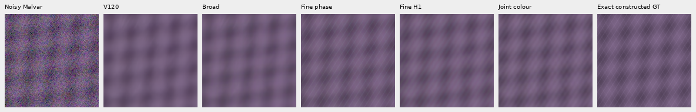
iso1600-source0-RGGB-analytic-triplet.png
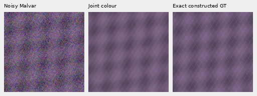
iso1600-source0-RGGB-neural-comparison.png
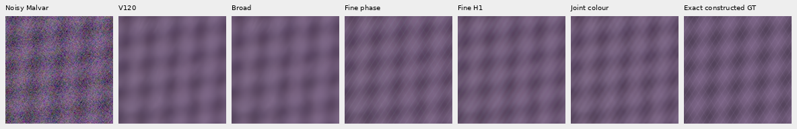
iso1600-source0-RGGB-neural-triplet.png
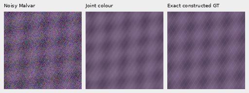
iso6400-source0-RGGB-analytic-comparison.png
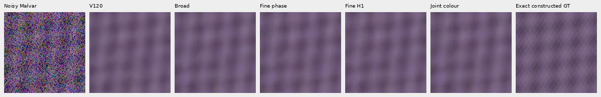
iso6400-source0-RGGB-analytic-triplet.png
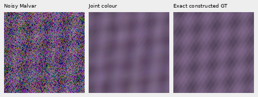
iso6400-source0-RGGB-neural-comparison.png
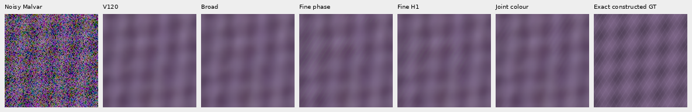
iso6400-source0-RGGB-neural-triplet.png
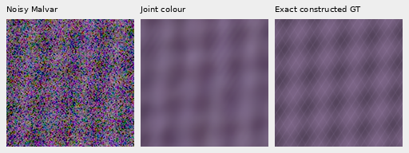
iso1600-source0-BGGR-analytic-comparison.png
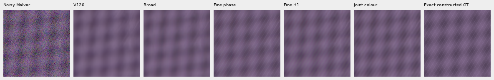
iso1600-source0-BGGR-neural-comparison.png
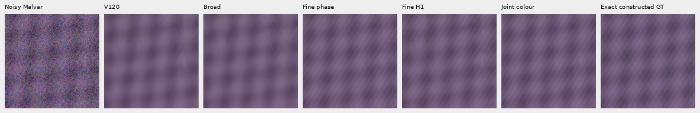
iso6400-source0-BGGR-analytic-comparison.png
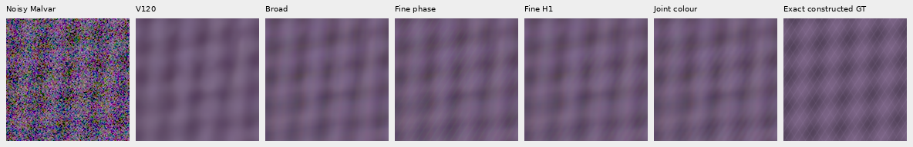
iso6400-source0-BGGR-neural-comparison.png
iso1600-source0-GRBG-analytic-comparison.png
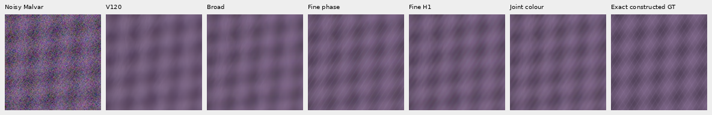
iso1600-source0-GRBG-neural-comparison.png
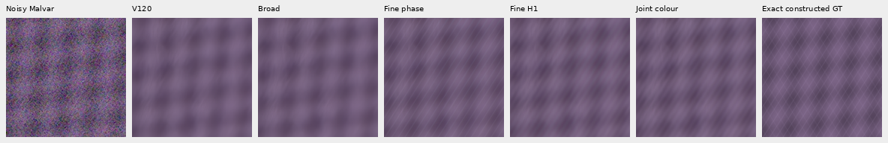
iso6400-source0-GRBG-analytic-comparison.png
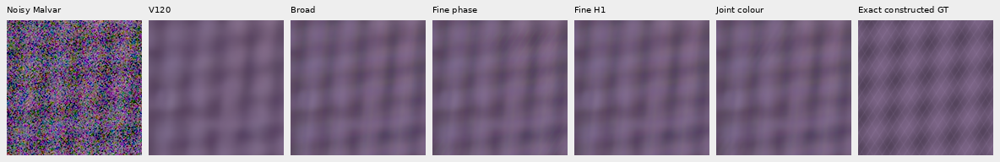
iso6400-source0-GRBG-neural-comparison.png
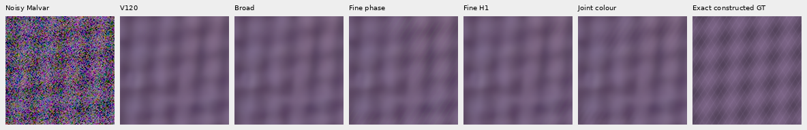
iso1600-source0-GBRG-analytic-comparison.png
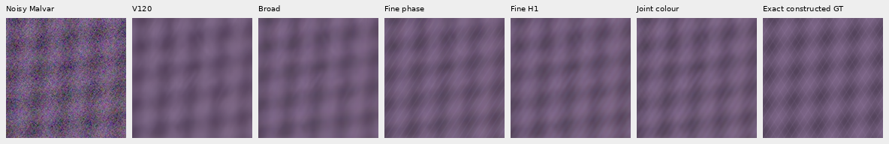
iso1600-source0-GBRG-neural-comparison.png
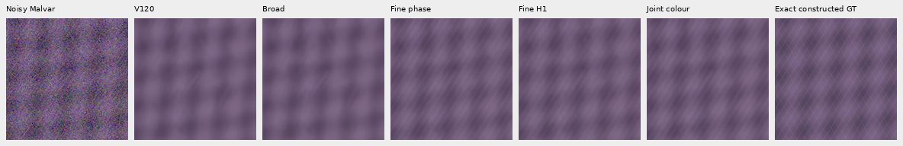
iso6400-source0-GBRG-analytic-comparison.png
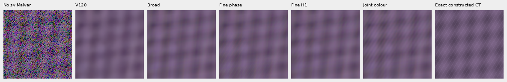
iso6400-source0-GBRG-neural-comparison.png
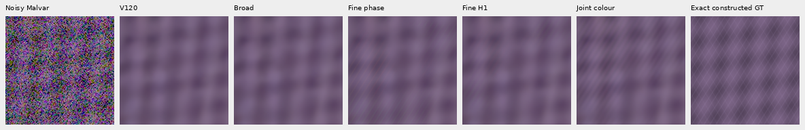
iso1600-source1-RGGB-analytic-comparison.png
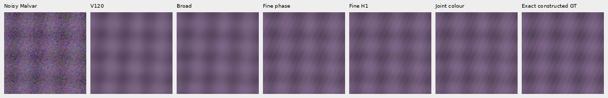
iso1600-source1-RGGB-analytic-triplet.png
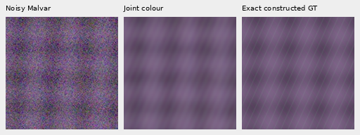
iso1600-source1-RGGB-neural-comparison.png
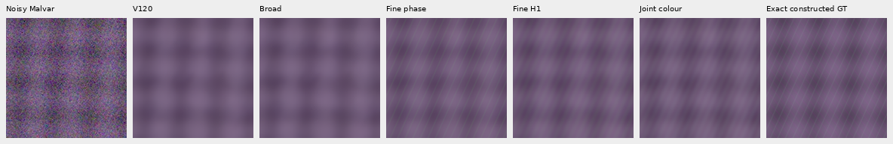
iso1600-source1-RGGB-neural-triplet.png
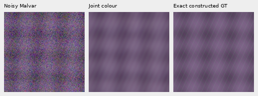
iso6400-source1-RGGB-analytic-comparison.png
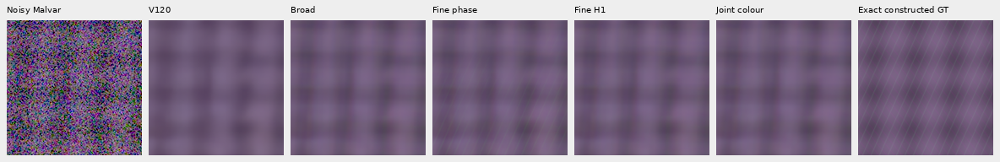
iso6400-source1-RGGB-analytic-triplet.png
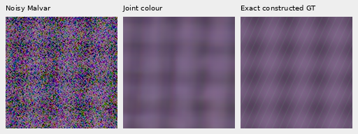
iso6400-source1-RGGB-neural-comparison.png
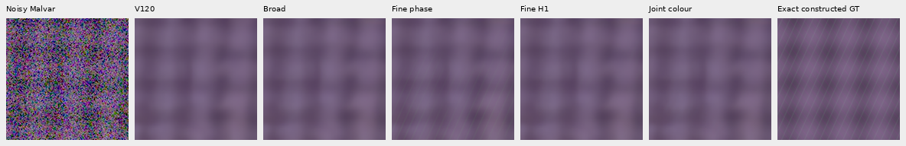
iso6400-source1-RGGB-neural-triplet.png
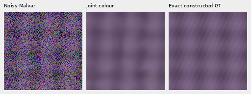
iso1600-source1-BGGR-analytic-comparison.png
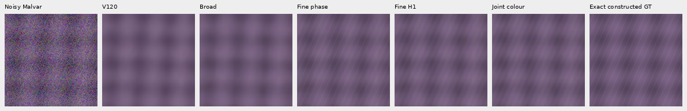
iso1600-source1-BGGR-neural-comparison.png
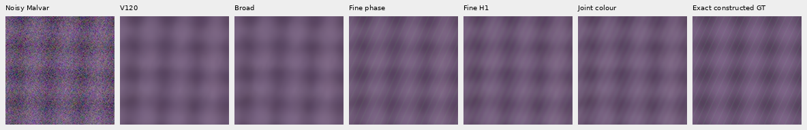
iso6400-source1-BGGR-analytic-comparison.png
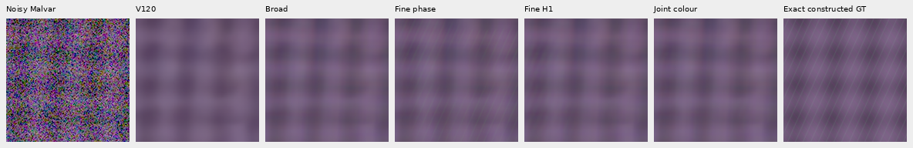
iso6400-source1-BGGR-neural-comparison.png
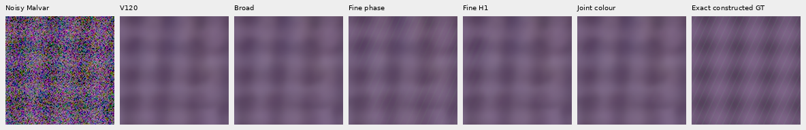
iso1600-source1-GRBG-analytic-comparison.png
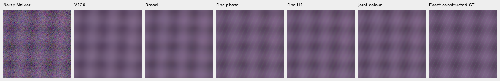
iso1600-source1-GRBG-neural-comparison.png
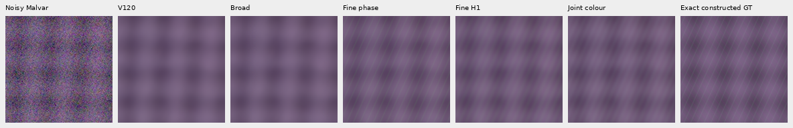
iso6400-source1-GRBG-analytic-comparison.png
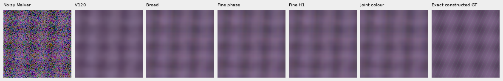
iso6400-source1-GRBG-neural-comparison.png
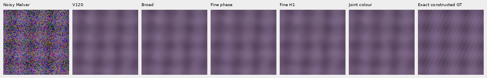
iso1600-source1-GBRG-analytic-comparison.png
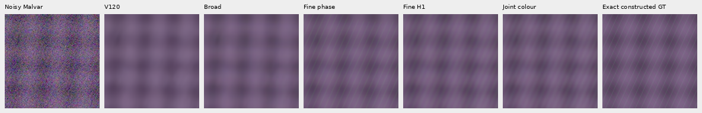
iso1600-source1-GBRG-neural-comparison.png
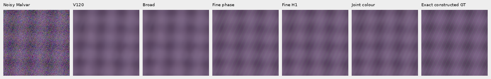
iso6400-source1-GBRG-analytic-comparison.png
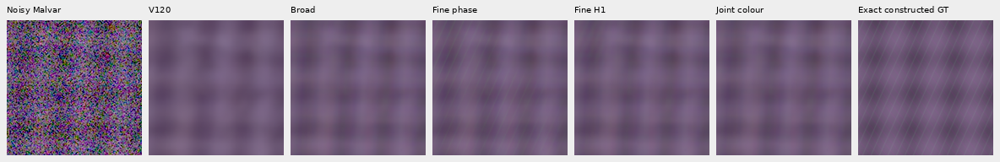
iso6400-source1-GBRG-neural-comparison.png
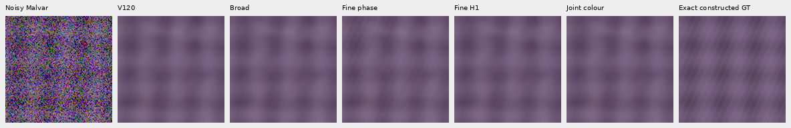